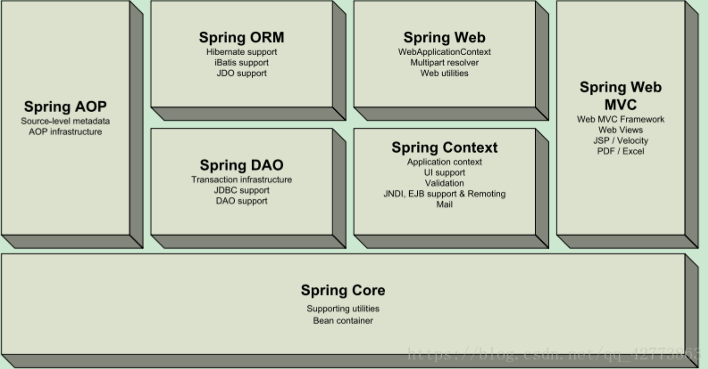
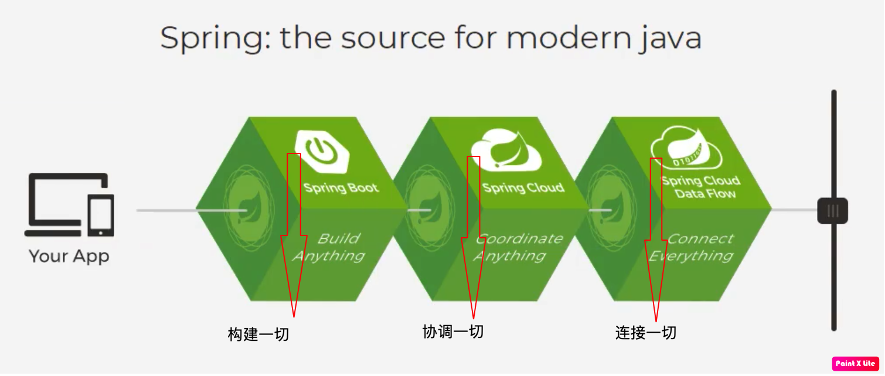
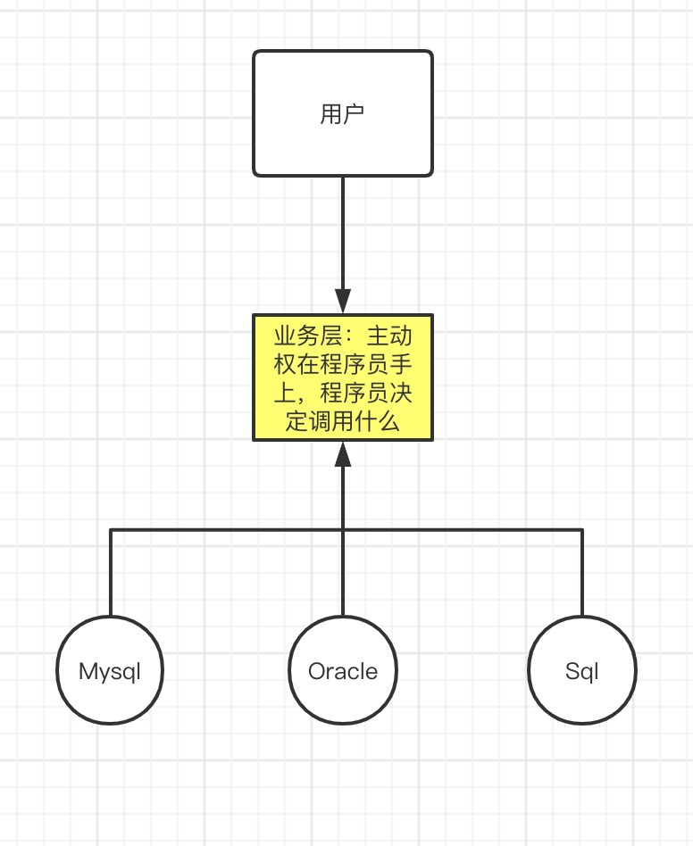
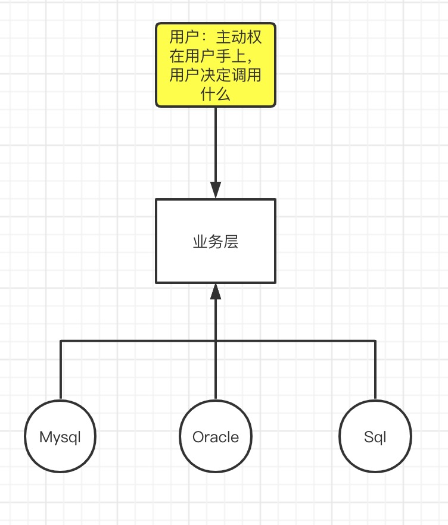
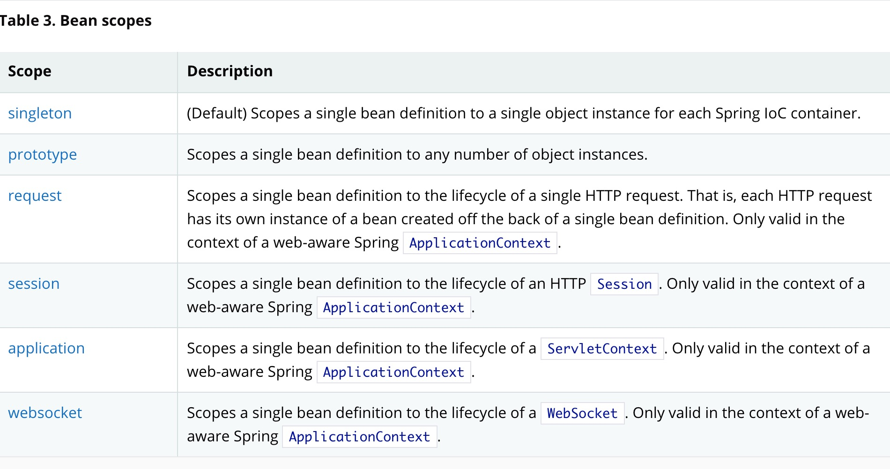
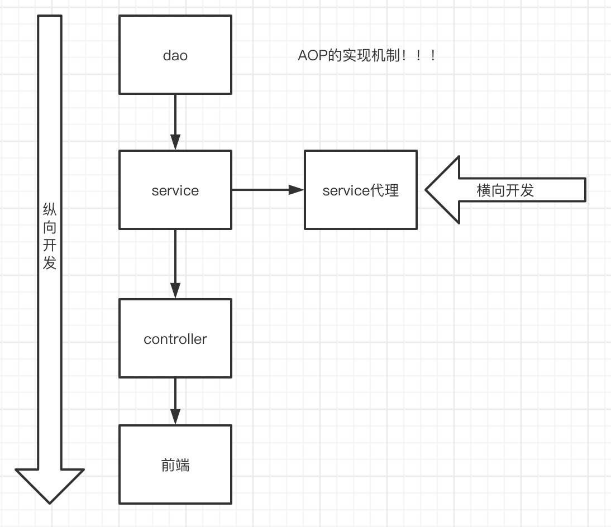

1、Spring
1.1、简介
- Spring：春天———->给软件行业带来春天
- 2002年，首次推吹spring框架雏形：interface21
- 以interface21为基础，经过不断丰富，2004年3月24日，发布了Spring的1.0版
- Spring Framework创始人，著名作者。 Rod在悉尼大学不仅获得了计算机学位，同时还获得了音乐学位。更令人吃惊的是在回到软件开发领域之前，他还获得了音乐学的博士学位。
- Spring理念：使现有的技术更加容易使用，本身是一个大杂烩，整合了现在所有的技术框架
- SSH：Struts2 + Spring + Hibernate
- SSM：SpringMVC + Spring + Mybatis
官网：https://spring.io/projects/spring-framework#overview
官方下载地址：https://repo.spring.io/release/org/springframework/spring/
GitHub：https://github.com/spring-projects/spring-framework
1 | <dependency> |
1.2、优点
- Spring是一个开源的免费的框架
- Spring是一个轻量级的、非入侵式的框架
- 控制反转（IOC）、面向切面编程（AOP）
- 支持事务处理，对框架整合的支持
总结：Spring是一个轻量级的控制反转和面向切面编程的框架！
1.3、组成

组成 Spring 框架的每个模块（或组件）都可以单独存在，或者与其他一个或多个模块联合实现。每个模块的功能如下：
- 核心容器：核心容器提供 Spring 框架的基本功能。核心容器的主要组件是 BeanFactory，它是工厂模式的实现。BeanFactory 使用控制反转（IOC） 模式将应用程序的配置和依赖性规范与实际的应用程序代码分开。
- Spring 上下文：Spring 上下文是一个配置文件，向 Spring 框架提供上下文信息。Spring 上下文包括企业服务，例如 JNDI、EJB、电子邮件、国际化、校验和调度功能。
- Spring AOP：通过配置管理特性，Spring AOP 模块直接将面向切面的编程功能 , 集成到了 Spring 框架中。所以，可以很容易地使 Spring 框架管理任何支持 AOP的对象。Spring AOP 模块为基于 Spring 的应用程序中的对象提供了事务管理服务。通过使用 Spring AOP，不用依赖组件，就可以将声明性事务管理集成到应用程序中。
- Spring DAO：JDBC DAO 抽象层提供了有意义的异常层次结构，可用该结构来管理异常处理和不同数据库供应商抛出的错误消息。异常层次结构简化了错误处理，并且极大地降低了需要编写的异常代码数量（例如打开和关闭连接）。Spring DAO 的面向 JDBC 的异常遵从通用的 DAO 异常层次结构。
- Spring ORM：Spring 框架插入了若干个 ORM 框架，从而提供了 ORM 的对象关系工具，其中包括 JDO、Hibernate 和 iBatis SQL Map。所有这些都遵从 Spring 的通用事务和 DAO 异常层次结构。
- Spring Web 模块：Web 上下文模块建立在应用程序上下文模块之上，为基于 Web 的应用程序提供了上下文。所以，Spring 框架支持与 Jakarta Struts 的集成。Web 模块还简化了处理多部分请求以及将请求参数绑定到域对象的工作。
- Spring MVC 框架：MVC 框架是一个全功能的构建 Web 应用程序的 MVC 实现。通过策略接口，MVC 框架变成为高度可配置的，MVC 容纳了大量视图技术，其中包括 JSP、Velocity、Tiles、iText 和 POI。
1.4、拓展
Spring官网中这样介绍：现代化的Java开发，说白了就是基于Spring的开发

- SpringBoot：
- 一个快速开发的脚手架
- 基于SpringBoot可以快速开发单个微服务
- 约定大于配置！
- SpringCloud
- SpringCloud是基于SpringBoot实现的
学习SprinhBoot的前提是要完全掌握Spring和SpringMVC
弊端：Spring发展久了之后违背了原来的使用简单的理念！配置十分繁琐，知道SpringBoot出来后才得以解放。
2、IOC理论指导
之前的业务我们采用的方法
1.UserDao接口
2.UserDao实现类
3.UserService接口
4.UserService实现类
用户的需求可能会影响我们原来的代码，我们会根据用户需要去修改源代码！如果代码量十分大，那修改的成本会十分大。

我们是用一个set接口：已经发生了革命性变化
1 | private UserDao userDao; |
- 之前，程序是主动创建对象！控制权在程序员手上
- 现在，使用了set注入后，程序不再有主动性，而是变成了被动接受的对象！

这种思想，从本质上解决了问题，程序员再也不用去管理对象的创建了，系统耦合性大大降低，可以专注在业务实现上。这就是IOC原型！
IOC本质
控制反转IoC(Inversion of Control)，是一种设计思想，DI(依赖注入)是实现IoC的一种方法，也有人认为DI只是IoC的另一种说法。没有IoC的程序中 , 我们使用面向对象编程 , 对象的创建与对象间的依赖关系完全硬编码在程序中，对象的创建由程序自己控制，控制反转后将对象的创建转移给第三方，个人认为所谓控制反转就是：获得依赖对象的方式反转了。
IoC是Spring框架的核心内容，使用多种方式完美的实现了IoC，可以使用XML配置，也可以使用注解，新版本的Spring也可以零配置实现IoC。
采用XML方式配置Bean的时候，Bean的定义信息是和实现分离的，而采用注解的方式可以把两者合为一体，Bean的定义信息直接以注解的形式定义在实现类中，从而达到了零配置的目的。
控制反转是一种通过描述（XML或注解）并通过第三方去生产或获取特定对象的方式。在Spring中实现控制反转的是IoC容器，其实现方法是依赖注入（Dependency Injection,DI）。
3、HelloSpring
pojo对象：
1 | public class Hello { |
spring的xml配置：
1 |
|
测试用例：
1 | public class MyTest { |
这就叫控制反转
- 控制：谁来控制对象创建，传统程序的对象是由程序本身创建的，使用Spring之后，由Spring来创建。
- 反转：程序本身不创建对象，而是被动接受对象。
- 依赖注入：就是利用set方法进行注入，没有set方法spring基本上跑不起来
IOC就是一种编程思想，由主动编程变成被动的接受。
可以通过new ClassPathXmlApplicationContext查看跟踪源码
到了现在为止，我们彻底不需要在程序中修改代码，要实现不同的操作，只需要在xml进行配置，所谓的IOC，就是一句话：对象由Spring来创建、管理、装配。
4、IOC创建对象方式
使用无参构造方法创建对象、默认！
假设使用有参构造方法。
下标赋值
1
2
3
4<!--有参构造第一种方式：下标赋值-->
<bean id="user" class="cn.zero.pojo.User">
<constructor-arg index="0" value="whx"></constructor-arg>
</bean>参数类型
1
2
3
4<!--有参构造第二种方式：参数类型-->
<bean id="user" class="cn.zero.pojo.User">
<constructor-arg type="java.lang.String" value="maizhu"></constructor-arg>
</bean>直接通过参数名来设置
1
2
3
4<!--有参构造第三种方式：参数名来设置-->
<bean id="user" class="cn.zero.pojo.User">
<constructor-arg name="name" value="maizhu"></constructor-arg>
</bean>
总结：在spring配置文件加载完的时候，容器中管理的对象已经被初始化了。
5、Spring配置说明
5.1、别名
1 | <!--起别名--> |
5.2、Bean的配置
1 | <!-- |
5.3、import
这个多用于团队合作，他可以将多个配置文件导入合并为一个
applicationContext.xml：
1 | <import resource="beans1.xml"/> |
6、DI依赖注入
6.1、构造器注入
前面已经说过了
6.2、set方式注入【重点】
- 依赖注入：set注入！
- 依赖：bean对象的创建依赖于容器
- 注入：bean对象中的所有属性，由容器来注入！
【环境测试】
复杂对象
1
2
3
4
5
6
7
8
9
10
11public class Address {
private String address;
public String getAddress() {
return address;
}
public void setAddress(String address) {
this.address = address;
}
}真实测试对象
1
2
3
4
5
6
7
8
9
10public class Student {
private String name;
private Address address;
private String[] books;
private List<String> hobbys;
private Map<String,String> card;
private Set<String> games;
private Properties info;
private String wife;
}beans.xml
1
2
3
4
5
6
7
8
9
10
11
12
13
14
15
16
17
18
19
20
21
22
23
24
25
26
27
28
29
30
31
32
33
34
35
36
37
38
39
40
41
42
43
44
45
46
47
48
49<bean id="student" class="cn.zero.pojo.Student">
<!--第一种：普通值注入，value-->
<property name="name" value="王鸿翔"/>
<!--第二种：bean注入,ref-->
<property name="address" ref="address"/>
<!--数组-->
<property name="books">
<array>
<value>基督山伯爵</value>
<value>肖申克的救赎</value>
<value>卡拉马佐夫</value>
<value>围城</value>
</array>
</property>
<!--list-->
<property name="hobbys">
<list>
<value>看书</value>
<value>吉他</value>
<value>钢琴</value>
</list>
</property>
<!--map-->
<property name="card">
<map>
<entry key="shenfenzheng" value="1252463574745"></entry>
</map>
</property>
<!--set-->
<property name="games">
<set>
<value>lol</value>
<value>dnf</value>
<value>abc</value>
</set>
</property>
<!--null-->
<property name="wife">
<null/>
</property>
<!--Properties-->
<property name="info">
<props>
<prop key="学号">2018000393</prop>
<prop key="姓名">王鸿翔</prop>
<prop key="性别">男</prop>
</props>
</property>
</bean>
6.3、拓展方式注入
我们可以使用p命名空间和c命名空间进行注入：
使用：
1 |
|
测试：
1 | public class MyTest2 { |
注意点：p命名和c命名不能直接使用，需要导入约束
1 | xmlns:p="http://www.springframework.org/schema/p" |
6.4、Bean的作用域

单例模式（Spring默认机制）
1
2
3
4<bean id="accountService" class="com.something.DefaultAccountService"/>
<!-- the following is equivalent, though redundant (singleton scope is the default) -->
<bean id="accountService" class="com.something.DefaultAccountService" scope="singleton"/>
原型模式：每次从容器中get时都会产生新对象！
1
<bean id="accountService" class="com.something.DefaultAccountService" scope="prototype"/>
- 其余的request、session、application这些只在web开发中使用！
7、Bean的自动装配
- 自动装配是Spring满足bean依赖的一种方式
- Spring会在上下文中自动寻找，并自动给bean装配属性！
在Spring中有三种装配方式
- 在xml中显示配置
- 在java中显示配置
- 隐式的自动装配bean【重要！】
7.1、测试
1、环境搭建：一个人两个宠物！三个对象
7.2、ByName自动装配
1 | <bean id="cat" class="cn.zero.pojo.Cat"></bean> |
7.3、ByType自动装配
1 | <bean id="cat" class="cn.zero.pojo.Cat"></bean> |
小结：
- byName需要保证所有bean的Id唯一，并且这个bean的id值需要和自动注入的属性的set方法名后的值一致！
- byType需要保证所有bean的class唯一，并且这个bean的类型要和自动注入的属性类型一致！
7.4、使用注解自动装配
jdk1.5就支持注解的使用，Spring2.5支持注解的使用
Spring官网提问关于xml和注解配置哪个更好：
The introduction of annotation-based configuration raised the question of whether this approach is “better” than XML. The short answer is “it depends.” The long answer is that each approach has its pros and cons, and, usually, it is up to the developer to decide which strategy suits them better. Due to the way they are defined, annotations provide a lot of context in their declaration, leading to shorter and more concise configuration. However, XML excels at wiring up components without touching their source code or recompiling them. Some developers prefer having the wiring close to the source while others argue that annotated classes are no longer POJOs and, furthermore, that the configuration becomes decentralized and harder to control.
基于注解的配置的引入提出了一个问题，即这种方法是否比XML“更好”。简短的答案是“取决于情况”。长远的答案是每种方法都有其优缺点，通常，由开发人员决定哪种策略更适合他们。由于定义方式的不同，注解在声明中提供了很多上下文，从而使配置更短，更简洁。但是，XML擅长连接组件而不接触其源代码或重新编译它们。一些开发人员更喜欢将布线放置在靠近源的位置，而另一些开发人员则认为带注解的类不再是POJO，而且，配置变得分散并且难以控制。
使用注解须知：
引入约束
配置注解支持
1
2
3
4
5
6
7
8
9
10
11
12
<beans xmlns="http://www.springframework.org/schema/beans"
xmlns:xsi="http://www.w3.org/2001/XMLSchema-instance"
xmlns:context="http://www.springframework.org/schema/context"
xsi:schemaLocation="http://www.springframework.org/schema/beans
https://www.springframework.org/schema/beans/spring-beans.xsd
http://www.springframework.org/schema/context
https://www.springframework.org/schema/context/spring-context.xsd">
<context:annotation-config/>
</beans>
@Autowired
直接在属性上使用即可！也可以在set方法上使用
使用Autowired不用编写set方法了，前提是你这个自动装配的属性在IOC（Spring）容器中存在，且符合名字byname！
科普：
1 | 字段标记了这个注解，说明这个注解可以为Null |
1 | public Autowired { |
1 | public class People { |
如果@Autowired注解使用环境比较复杂，一个注解不能完成自动装配，可以使用@Qualifier（value = “xxx”）去配合@Autowired使用，指定一个唯一的bean对象注入！
1 | <bean id="cat123" class="cn.zero.pojo.Cat"></bean> |
1 | public class People { |
@Resource
1 | public class People { |
小结：
@Resource和@Autowired的异同点：
相同点：
都是用来自动装配的，都可以放在属性字段上
@Autowired是通过byType方式实现，再通过byName实现
@Resource是通过byName方式实现，如果找不到，再通过byType方式实现！如果两个都找不到就报错！
不同点：
- 执行顺序不同，@Autowired先通过byType，@Resource先通过byName
8、使用注解开发
在Spirng4之后，在使用注解开发必须要导入aop的包
1.引入约束，导入注解支持，注解扫描
1 |
|
2.@Component注解
1 | //相当于<bean id="user" class="cn.zero.pojo.User"> |
3.衍生的注解：
- dao【@Repository】
- service【@Service】
- controller【@Controller】
上述四个注解功能相同，都代表将某个类放入容器中，就是装配Bean
4.自动装配：
1 | - @Autowired：自动装配通过类型，名字。 |
5.作用域：
1 |
|
6.小结：
xml与注解：
- xml更加万能，适用于任何场合！维护简单方便！
- 注解 不是自己的类使用不了，维护相对复杂！
最佳实践：
- xml用来管理Bean
- 注解只负责属性注入
9、使用Java 的方式配置Spring
我们现在要完全不使用Spring的配置，全权交给Java
JavaConfig是Spring的一个子项目，在Spring4之后 它变成一个核心功能！
配置类–相当于xml配置：
1 | //这个也会被Spring容器托管，因为它本身就是一个@Component，@configuration代表这是一个配置类，就和之前的beans.xml作用相同 |
测试：
1 | public class MyTest { |
pojo：
1 |
|
10、代理模式
为什么学习代理模式？因为这是SpirngAOP的底层！
代理模式分类：
- 静态代理
- 动态代理
10.1、静态代理
角色分析：
- 抽象角色：一般会使用接口或抽象类
- 真实角色：被代理的角色
- 代理角色：代理真实角色，代理真实角色后，我们一般会做一些附属操作
- 客户：访问代理对象的人
静态代理好处：
- 可以使真实角色操作更加纯粹，不用去关心一些业务逻辑
- 公共交给代理角色，实现业务分工
- 公共业务发生扩展的时候，方便集中管理
缺点：每一个真实角色都需要一个代理对象，开发复杂。
1.抽象角色
1 | public interface Rent { |
2.真实角色
1 | public class Host implements Rent{ |
3.代理角色
1 | public class Proxy implements Rent{ |
4.客户端代理角色
1 | public class Client { |
AOP的实现机制！–通过代理

10.2、动态代理
- 动态代理和静态代理角色一样
- 动态代理的代理类是动态生成的，不是我们直接写好的
- 动态代理分为两大类：基于接口的动态代理，基于类的动态代理。
- 基于接口–jdk的动态代理【我们在这里使用】
- 基于类：cglib
- java字节码：javassist
需要了解两个类：Proxy：代理，invocationHandler：调用处理
动态代理好处：
- 可以使真实角色操作更加纯粹，不用去关心一些业务逻辑
- 公共交给代理角色，实现业务分工
- 公共业务发生扩展的时候，方便集中管理
- 一个动态代理类代理的是一个接口，一般就是对应的一类业务
- 一个动态代理类可以代理多个类，只是要实现统一接口即可
11、AOP
方式一：使用Spring的API接口
xml配置
1 | <!--注册bean--> |
执行前API接口
1 | public class Log implements MethodBeforeAdvice { |
执行后API接口
1 | public class AfterLog implements AfterReturningAdvice { |
方式二：自定义实现
xml配置
1 | <!--注册bean--> |
自定义方法
1 | public class DiyLog { |
方式三：注解实现
xml配置
1 | <!--注册bean--> |
带注解的实现类
1 |
|
12、整合Mybatis
Mybatis-Spring
13、声明式事务
spring中的事务管理
- 声明式事务：AOP实现
- 编程式事务：需要在代码中进行事务管理